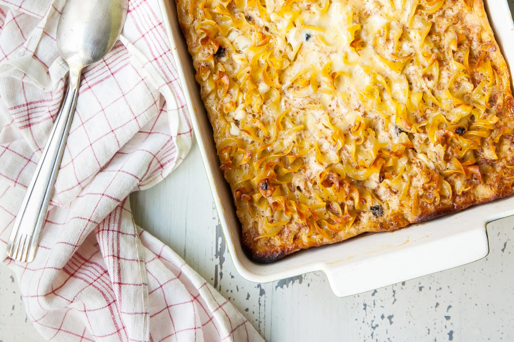

Noodle Kugel
This sweet, noodle-based kugel is along the lines of what you’d typically see on the table at a Shabbat dinner or Passover.

Kugels are dense, deliciously carb-laden casseroles that come in many varieties, savory and sweet. They can be noodle, potato, or even matzo-based, depending on your family’s traditions and when they’re served.
This sweet, noodle-based kugel is along the lines of what you’d typically see on the table at a Shabbat dinner or holiday gathering. Sweetened with sugar, enriched with sour cream and cottage cheese, and studded with raisins and apples, you might think it’s meant for dessert, but kugel is firmly entrenched in side-dish and/or leftover breakfast territory. (Sidenote: If you keep kosher, a dairy-filled kugel would not be served alongside a meat-based main dish.)
Ingredients
For the kugel
- 12 ounces wide egg noodles
- 2 tablespoons unsalted butter
- 2 apples (fuji, gala, or other firm apples), peeled, cored, and diced
- 6 large eggs
- 2 cups (1 pound) sour cream
- 2 cups (1 pound) cottage cheese
- 2/3 cup granulated sugar
- 2/3 cup raisins
- 1/2 teaspoon ground cinnamon
- 1/2 teaspoon kosher salt
For the topping
- 2 cups cornflakes cereal
- 1/4 cup brown sugar
- 1/2 teaspoon ground cinnamon
- 2 tablespoons unsalted butter, melted
Steps
- Preheat the oven to 350ºF. Grease a 9x13-inch casserole dish with butter. Set aside until ready to use.
- Bring a large pot of water to a boil over medium-high heat. Add the noodles and boil until al dente, about 8 minutes or the according to package instructions.
- While the noodles are boiling, make the topping. In a large bowl, use your hands to crush the cornflakes into coarse crumbs. Add the brown sugar, cinnamon, and melted butter and stir to combine. Set aside until ready to use.
- After you’ve drained the noodles, add the butter into the large bowl while the noodles are still hot, and stir until the butter is melted. Add the diced apples, eggs, sour cream, cottage cheese, sugar, raisins, cinnamon, and salt, and stir until evenly combined.
- Transfer the noodle mixture to the greased baking dish, then sprinkle the cornflake mixture evenly over the noodle mixture.
- Cover the dish tightly with aluminum foil. Bake the kugel for 1 hour, then remove the foil and bake for 20 more minutes. You’ll know your kugel is done when an instant-read thermometer inserted in the center of the casserole reads 150 to 160°F, the topping is lightly browned, and the noodles have turned golden brown around the edges of the baking dish.
- Remove from the oven and let cool for at least 1 hour before serving, to allow the kugel to set up.
Cut the kugel into squares or rectangles—this casserole makes 8 or 9 generous servings (about 4 inches by 3 inches), or 12 smaller ones (about 3 inches square). Serve warm or at room temperature.
Return to main page